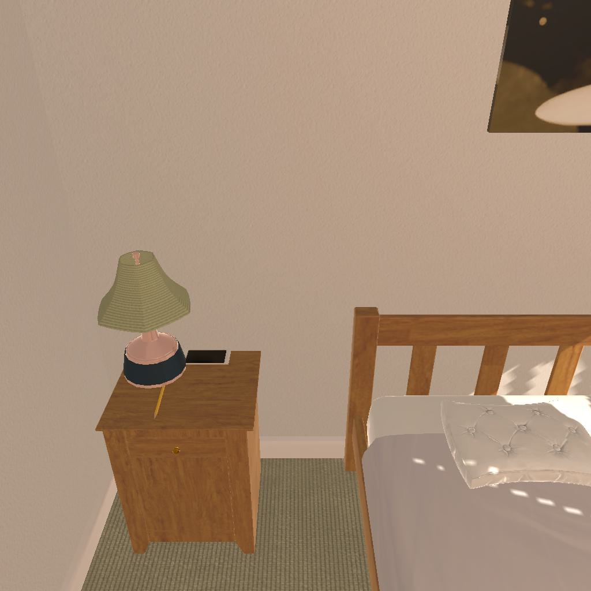

---------------------------------------------------------task: 0---------------------------------------------------------
--------------------------------------------------------------------------------------------------------------------------------------------------------------------
--------------------------------------------------------------------------------------------------------------------------------------------------------------------
Step:--------------------------------------------------------------------------1-------------------------------------------------------------------------------
----------------------------------------
VLM Prompt:
Image1:
**Instruction**
1. Analyze the provided image to identify all visible household objects, focusing on those relevant to the task description "examine the alarmclock with the desklamp."
2. Use the analysis of the image and the task hint "The agent must find an object of the desired type, locate and turn on a light source with the desired object in-hand." to answer the question: what is the most reasonable action in the choices for the task description "examine the alarmclock with the desklamp"?
4. Decide and write the answer using the template: The answer is: (i): , where i is the real number. If there is no desired object in the image, search every place based on **Initial Observation** to find the object. And if no one is exactly correct, choose a similar answer.
**Initial Observation**
You are in the middle of a room. Looking quickly around you, you can see bed (1), sidetable (1), drawer (1-11), dresser (1), safe (1), laundryhamper (1), garbagecan (1)
**Answer Choices**
(1): go to bed 1
(2): go to drawer 1
(3): go to dresser 1
(4): go to drawer 2
(5): go to drawer 3
(6): go to drawer 4
(7): go to drawer 5
(8): go to drawer 6
(9): go to drawer 7
(10): go to drawer 8
(11): go to drawer 9
(12): go to drawer 10
(13): go to drawer 11
(14): go to safe 1
(15): go to laundryhamper 1
(16): go to garbagecan 1
(17): take pillow 1 from sidetable 1
(18): take cellphone 1 from sidetable 1
(19): take pencil 1 from sidetable 1
(20): use desklamp 1
(21): examine sidetable 1
**Answer**
Let's think step by step by following the instructions.
----------------------------------------
----------------------------------------
Original Response:
First, we analyze the image provided. We can see a sidetable with a desklamp and what appears to be an alarm clock on it. We also see a bed and a part of a dresser, but these are not relevant to the task description.
Based on the task hint, the agent must find an alarm clock and turn on a light source. In the image, the alarm clock is already on the sidetable, and the desklamp is the light source we need to turn on.
Now, let's look at the answer choices. Since the alarm clock is already visible on the sidetable, there is no need to search drawers, dressers, safes, laundry hampers, or garbage cans. Taking other items like a pillow, cellphone, or pencil is also not required for this task.
The most reasonable action from the choices would be to turn on the desklamp to examine the alarm clock with it. Therefore, the answer is:
The answer is: (20): use desklamp 1.
----------------------------------------
----------------------------------------
>>> Refine Original VLM Response and Get Pure Action: use desklamp 1
----------------------------------------
-----------------------------------------------------------------
Running time: 12.21850061416626 seconds
Total Money: 0.03565
-----------------------------------------------------------------
-----------------------------------------------------------------
Text Observation:You turn on the desklamp 1.
-----------------------------------------------------------------
UNSUCCEED